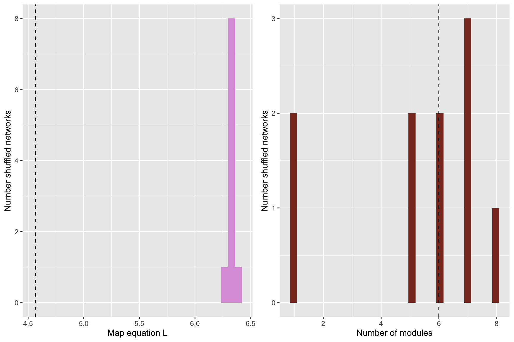
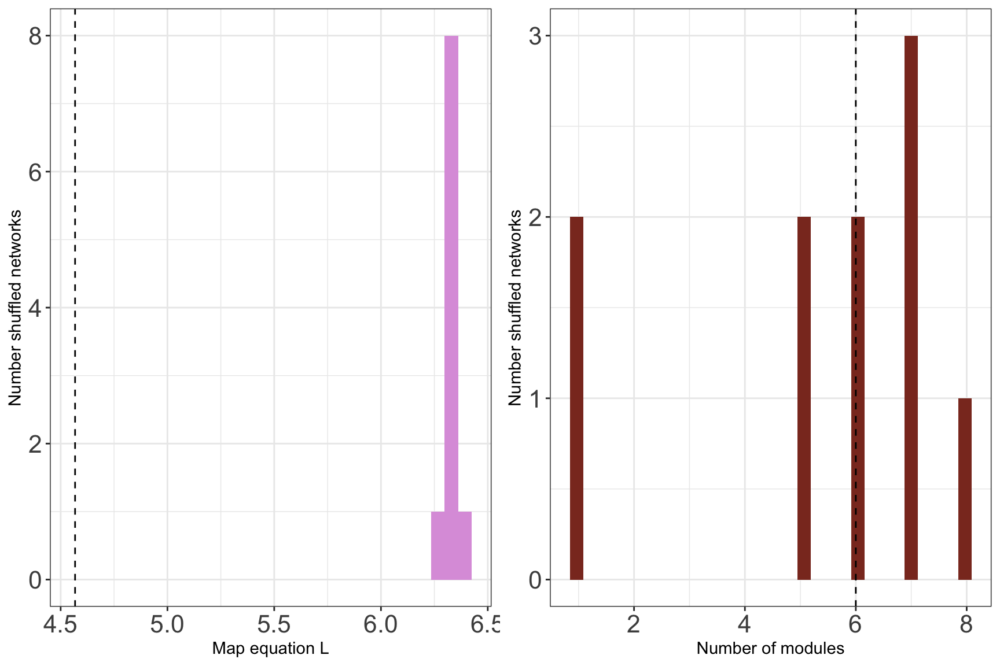
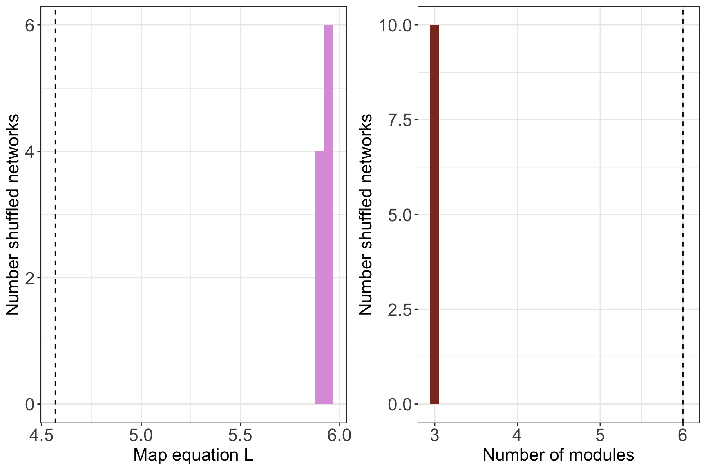

Hypothesis testing
1. Built in randomisation capabilities for bipartite networks
The function run_infomap_monolayer can use shuffling
algorithms built into vegan. To use this, we need to set
signif=T and provide a shuffling method to
shuff_method. The shuffling methods are the ones detailed
in ?vegan::commsim.
network_object <- create_monolayer_network(memmott1999, bipartite = T, directed = F, group_names = c('A','P'))## [1] "Input: a bipartite matrix"# Run with shuffling
infomap_object <- run_infomap_monolayer(network_object, infomap_executable='Infomap',
flow_model = 'undirected',
silent=T, trials=20, two_level=T, seed=123,
signif = T, shuff_method = 'r00', nsim = 10) #nsim = 50## [1] "Creating a link list..."
## running: ./Infomap infomap.txt . --tree --seed 123 -N 20 -f undirected --silent --two-level
## [1] "Shuffling..."
## [1] "Running Infomap on shuffled network 1/10"
## [1] "Running Infomap on shuffled network 2/10"
## [1] "Running Infomap on shuffled network 3/10"
## [1] "Running Infomap on shuffled network 4/10"
## [1] "Running Infomap on shuffled network 5/10"
## [1] "Running Infomap on shuffled network 6/10"
## [1] "Running Infomap on shuffled network 7/10"
## [1] "Running Infomap on shuffled network 8/10"
## [1] "Running Infomap on shuffled network 9/10"
## [1] "Running Infomap on shuffled network 10/10"## Warning in run_infomap_monolayer(network_object, infomap_executable = "Infomap", : pvalue is not really 0, it is <0.1## [1] "Removing auxilary files..."# Plot histograms
plots <- plot_signif(infomap_object, plotit = T)## `stat_bin()` using `bins = 30`. Pick better value with `binwidth`.
## `stat_bin()` using `bins = 30`. Pick better value with `binwidth`.
plot_grid(
plots$L_plot+
theme_bw()+
theme(legend.position='none',
legend.title = element_text(size=16),
axis.text = element_text(size=16)),
plots$m_plot+
theme_bw()+
theme(legend.position='none',
legend.title = element_text(size=16),
axis.text = element_text(size=16))
)## `stat_bin()` using `bins = 30`. Pick better value with `binwidth`.
## `stat_bin()` using `bins = 30`. Pick better value with `binwidth`.
Another way is to provide shuff_method with a list
containing already shuffled networks. You can for example use the
function shuffle_infomap to produce shuffled networks with
vegan. This is necessary on the shuffling algorithm from
?vegan::commsim needs additional arguments such as
burning.
# Or can shuffle like this, if additional arguments are needed for the shuffling algorithm
shuffled <- shuffle_infomap(network_object, shuff_method='curveball', nsim=10, burnin=2000) #nsim=50## [1] "Shuffling..."infomap_object <- run_infomap_monolayer(network_object, infomap_executable='Infomap',
flow_model = 'undirected',
silent=T, trials=20, two_level=T, seed=123,
signif = T, shuff_method = shuffled, nsim = 10) #nsim = 50## [1] "Creating a link list..."
## running: ./Infomap infomap.txt . --tree --seed 123 -N 20 -f undirected --silent --two-level
## [1] "Running Infomap on shuffled network 1/10"
## [1] "Running Infomap on shuffled network 2/10"
## [1] "Running Infomap on shuffled network 3/10"
## [1] "Running Infomap on shuffled network 4/10"
## [1] "Running Infomap on shuffled network 5/10"
## [1] "Running Infomap on shuffled network 6/10"
## [1] "Running Infomap on shuffled network 7/10"
## [1] "Running Infomap on shuffled network 8/10"
## [1] "Running Infomap on shuffled network 9/10"
## [1] "Running Infomap on shuffled network 10/10"## Warning in run_infomap_monolayer(network_object, infomap_executable = "Infomap", : pvalue is not really 0, it is <0.1## [1] "Removing auxilary files..."plots <- plot_signif(infomap_object, plotit = F)
plot_grid(
plots$L_plot+
theme_bw()+
theme(legend.position='none',
axis.text = element_text(size=16), #20
legend.title = element_text(size=16),
axis.title = element_text(size=16)), #20
plots$m_plot+
theme_bw()+
theme(legend.position='none',
axis.text = element_text(size=16), #20
legend.title = element_text(size=16),
axis.title = element_text(size=16)) #20
)## `stat_bin()` using `bins = 30`. Pick better value with `binwidth`.
## `stat_bin()` using `bins = 30`. Pick better value with `binwidth`.
2. Dedicated randomisation algorithm for the Tur et al. 2016 data set.
You can also create your own shuffling algorithm and a list of shuffled link lists. As in this example.
# Import data
data(tur2016)
tur2016_altitude2000 <- tur2016 %>%
filter(altitude==2000) %>%
select("donor", "receptor", "total") %>%
group_by(donor, receptor) %>%
summarise(n=mean(total)) %>%
rename(from = donor, to = receptor, weight = n) %>%
ungroup() %>%
slice(c(-10,-13,-28)) %>% # Remove singletons
filter(from!=to) # Remove self loops## `summarise()` has grouped output by 'donor'. You can override using the `.groups` argument.tur_network <- create_monolayer_network(tur2016_altitude2000, directed = T, bipartite = F)## [1] "Input: an unipartite edge list"## Warning: One or more rows sum to 0. This may be ok if you expect some links with only outgoing links (e.g., basal species in a food web)
## Warning: One or more columns sum to 0. This may be ok if you expect some links with only incoming links (e.g., top predators in a food web)# A dedicated function to shuffle the networks, considering the flow.
shuffle_tur_networks <- function(x){ # x is a network object
m <- x$mat
# Assign off-diagona values
off_diagonal_lower <- m[lower.tri(m, diag = FALSE)]
off_diagonal_upper <- m[upper.tri(m, diag = FALSE)]
out <- matrix(0, nrow(m), ncol(m), dimnames = list(rownames(m), colnames(m)))
out[lower.tri(out, diag = FALSE)] <- sample(off_diagonal_lower, size = length(off_diagonal_lower), replace = F)
out[upper.tri(out, diag = FALSE)] <- sample(off_diagonal_upper, size = length(off_diagonal_upper), replace = F)
# Re-assign the diagonal (left intact)
diag(out) <- diag(m)
# Sanity checks
t1 <- setequal(out[upper.tri(out, diag = FALSE)], m[upper.tri(m, diag = FALSE)]) #Should be TRUE
t2 <- setequal(out[lower.tri(out, diag = FALSE)], m[lower.tri(m, diag = FALSE)]) #Should be TRUE
t3 <- identical(out[upper.tri(out, diag = FALSE)], m[upper.tri(m, diag = FALSE)]) #Should be FALSE
t4 <- identical(out[lower.tri(out, diag = FALSE)], m[lower.tri(m, diag = FALSE)]) #Should be FALSE
t5 <- all(table(m)==table(out))# Should be TRUE because it includes all the values, including diagonal
if (any(c(t1,t2,!t3,!t4,t5)==F)){stop('One or more sanity checks failed')}
return(out)
}
# Create a list with shuffled link lists
nsim <- 100 #nsim <- 1000
shuffled <- NULL
for (i in 1:nsim){
print(i)
x <- shuffle_tur_networks(tur_network) #Shuffle the network
x <- create_monolayer_network(x,directed = T,bipartite = F) # Create a monolayer object
shuffled[[i]] <- create_infomap_linklist(x)$edge_list_infomap #Create a link-list
} ## [1] 1
## [1] 2
## [1] 3
## [1] 4
## [1] 5
## [1] 6
## [1] "Some nodes have no interactions. They will appear in the node table but not in the edge list"
## [1] 7
## [1] "Some nodes have no interactions. They will appear in the node table but not in the edge list"
## [1] 8
## [1] "Some nodes have no interactions. They will appear in the node table but not in the edge list"
## [1] 9
## [1] "Some nodes have no interactions. They will appear in the node table but not in the edge list"
## [1] 10
## [1] 11
## [1] "Some nodes have no interactions. They will appear in the node table but not in the edge list"
## [1] 12
## [1] "Some nodes have no interactions. They will appear in the node table but not in the edge list"
## [1] 13
## [1] 14
## [1] "Some nodes have no interactions. They will appear in the node table but not in the edge list"
## [1] 15
## [1] "Some nodes have no interactions. They will appear in the node table but not in the edge list"
## [1] 16
## [1] 17
## [1] 18
## [1] 19
## [1] 20
## [1] "Some nodes have no interactions. They will appear in the node table but not in the edge list"
## [1] 21
## [1] 22
## [1] 23
## [1] 24
## [1] "Some nodes have no interactions. They will appear in the node table but not in the edge list"
## [1] 25
## [1] 26
## [1] "Some nodes have no interactions. They will appear in the node table but not in the edge list"
## [1] 27
## [1] "Some nodes have no interactions. They will appear in the node table but not in the edge list"
## [1] 28
## [1] "Some nodes have no interactions. They will appear in the node table but not in the edge list"
## [1] 29
## [1] 30
## [1] 31
## [1] 32
## [1] 33
## [1] "Some nodes have no interactions. They will appear in the node table but not in the edge list"
## [1] 34
## [1] "Some nodes have no interactions. They will appear in the node table but not in the edge list"
## [1] 35
## [1] 36
## [1] 37
## [1] "Some nodes have no interactions. They will appear in the node table but not in the edge list"
## [1] 38
## [1] "Some nodes have no interactions. They will appear in the node table but not in the edge list"
## [1] 39
## [1] 40
## [1] "Some nodes have no interactions. They will appear in the node table but not in the edge list"
## [1] 41
## [1] 42
## [1] 43
## [1] 44
## [1] 45
## [1] "Some nodes have no interactions. They will appear in the node table but not in the edge list"
## [1] 46
## [1] 47
## [1] 48
## [1] 49
## [1] "Some nodes have no interactions. They will appear in the node table but not in the edge list"
## [1] 50
## [1] 51
## [1] 52
## [1] 53
## [1] "Some nodes have no interactions. They will appear in the node table but not in the edge list"
## [1] 54
## [1] "Some nodes have no interactions. They will appear in the node table but not in the edge list"
## [1] 55
## [1] 56
## [1] 57
## [1] "Some nodes have no interactions. They will appear in the node table but not in the edge list"
## [1] 58
## [1] 59
## [1] 60
## [1] "Some nodes have no interactions. They will appear in the node table but not in the edge list"
## [1] 61
## [1] 62
## [1] 63
## [1] "Some nodes have no interactions. They will appear in the node table but not in the edge list"
## [1] 64
## [1] 65
## [1] 66
## [1] 67
## [1] 68
## [1] 69
## [1] 70
## [1] "Some nodes have no interactions. They will appear in the node table but not in the edge list"
## [1] 71
## [1] 72
## [1] 73
## [1] 74
## [1] 75
## [1] "Some nodes have no interactions. They will appear in the node table but not in the edge list"
## [1] 76
## [1] "Some nodes have no interactions. They will appear in the node table but not in the edge list"
## [1] 77
## [1] 78
## [1] 79
## [1] 80
## [1] "Some nodes have no interactions. They will appear in the node table but not in the edge list"
## [1] 81
## [1] 82
## [1] 83
## [1] 84
## [1] 85
## [1] 86
## [1] 87
## [1] 88
## [1] 89
## [1] "Some nodes have no interactions. They will appear in the node table but not in the edge list"
## [1] 90
## [1] "Some nodes have no interactions. They will appear in the node table but not in the edge list"
## [1] 91
## [1] 92
## [1] 93
## [1] "Some nodes have no interactions. They will appear in the node table but not in the edge list"
## [1] 94
## [1] 95
## [1] "Some nodes have no interactions. They will appear in the node table but not in the edge list"
## [1] 96
## [1] "Some nodes have no interactions. They will appear in the node table but not in the edge list"
## [1] 97
## [1] 98
## [1] 99
## [1] 100# Use the shuffled link lists.
tur_signif <- run_infomap_monolayer(tur_network, infomap_executable='Infomap',
flow_model = 'rawdir',
silent=T,
trials=100, two_level=T, seed=200952,
signif = T, shuff_method = shuffled)## [1] "Creating a link list..."
## running: ./Infomap infomap.txt . --tree --seed 200952 -N 100 -f rawdir --silent --two-level
## [1] "Running Infomap on shuffled network 1/100"
## [1] "Running Infomap on shuffled network 2/100"
## [1] "Running Infomap on shuffled network 3/100"
## [1] "Running Infomap on shuffled network 4/100"
## [1] "Running Infomap on shuffled network 5/100"
## [1] "Running Infomap on shuffled network 6/100"
## [1] "Running Infomap on shuffled network 7/100"
## [1] "Running Infomap on shuffled network 8/100"
## [1] "Running Infomap on shuffled network 9/100"
## [1] "Running Infomap on shuffled network 10/100"
## [1] "Running Infomap on shuffled network 11/100"
## [1] "Running Infomap on shuffled network 12/100"
## [1] "Running Infomap on shuffled network 13/100"
## [1] "Running Infomap on shuffled network 14/100"
## [1] "Running Infomap on shuffled network 15/100"
## [1] "Running Infomap on shuffled network 16/100"
## [1] "Running Infomap on shuffled network 17/100"
## [1] "Running Infomap on shuffled network 18/100"
## [1] "Running Infomap on shuffled network 19/100"
## [1] "Running Infomap on shuffled network 20/100"
## [1] "Running Infomap on shuffled network 21/100"
## [1] "Running Infomap on shuffled network 22/100"
## [1] "Running Infomap on shuffled network 23/100"
## [1] "Running Infomap on shuffled network 24/100"
## [1] "Running Infomap on shuffled network 25/100"
## [1] "Running Infomap on shuffled network 26/100"
## [1] "Running Infomap on shuffled network 27/100"
## [1] "Running Infomap on shuffled network 28/100"
## [1] "Running Infomap on shuffled network 29/100"
## [1] "Running Infomap on shuffled network 30/100"
## [1] "Running Infomap on shuffled network 31/100"
## [1] "Running Infomap on shuffled network 32/100"
## [1] "Running Infomap on shuffled network 33/100"
## [1] "Running Infomap on shuffled network 34/100"
## [1] "Running Infomap on shuffled network 35/100"
## [1] "Running Infomap on shuffled network 36/100"
## [1] "Running Infomap on shuffled network 37/100"
## [1] "Running Infomap on shuffled network 38/100"
## [1] "Running Infomap on shuffled network 39/100"
## [1] "Running Infomap on shuffled network 40/100"
## [1] "Running Infomap on shuffled network 41/100"
## [1] "Running Infomap on shuffled network 42/100"
## [1] "Running Infomap on shuffled network 43/100"
## [1] "Running Infomap on shuffled network 44/100"
## [1] "Running Infomap on shuffled network 45/100"
## [1] "Running Infomap on shuffled network 46/100"
## [1] "Running Infomap on shuffled network 47/100"
## [1] "Running Infomap on shuffled network 48/100"
## [1] "Running Infomap on shuffled network 49/100"
## [1] "Running Infomap on shuffled network 50/100"
## [1] "Running Infomap on shuffled network 51/100"
## [1] "Running Infomap on shuffled network 52/100"
## [1] "Running Infomap on shuffled network 53/100"
## [1] "Running Infomap on shuffled network 54/100"
## [1] "Running Infomap on shuffled network 55/100"
## [1] "Running Infomap on shuffled network 56/100"
## [1] "Running Infomap on shuffled network 57/100"
## [1] "Running Infomap on shuffled network 58/100"
## [1] "Running Infomap on shuffled network 59/100"
## [1] "Running Infomap on shuffled network 60/100"
## [1] "Running Infomap on shuffled network 61/100"
## [1] "Running Infomap on shuffled network 62/100"
## [1] "Running Infomap on shuffled network 63/100"
## [1] "Running Infomap on shuffled network 64/100"
## [1] "Running Infomap on shuffled network 65/100"
## [1] "Running Infomap on shuffled network 66/100"
## [1] "Running Infomap on shuffled network 67/100"
## [1] "Running Infomap on shuffled network 68/100"
## [1] "Running Infomap on shuffled network 69/100"
## [1] "Running Infomap on shuffled network 70/100"
## [1] "Running Infomap on shuffled network 71/100"
## [1] "Running Infomap on shuffled network 72/100"
## [1] "Running Infomap on shuffled network 73/100"
## [1] "Running Infomap on shuffled network 74/100"
## [1] "Running Infomap on shuffled network 75/100"
## [1] "Running Infomap on shuffled network 76/100"
## [1] "Running Infomap on shuffled network 77/100"
## [1] "Running Infomap on shuffled network 78/100"
## [1] "Running Infomap on shuffled network 79/100"
## [1] "Running Infomap on shuffled network 80/100"
## [1] "Running Infomap on shuffled network 81/100"
## [1] "Running Infomap on shuffled network 82/100"
## [1] "Running Infomap on shuffled network 83/100"
## [1] "Running Infomap on shuffled network 84/100"
## [1] "Running Infomap on shuffled network 85/100"
## [1] "Running Infomap on shuffled network 86/100"
## [1] "Running Infomap on shuffled network 87/100"
## [1] "Running Infomap on shuffled network 88/100"
## [1] "Running Infomap on shuffled network 89/100"
## [1] "Running Infomap on shuffled network 90/100"
## [1] "Running Infomap on shuffled network 91/100"
## [1] "Running Infomap on shuffled network 92/100"
## [1] "Running Infomap on shuffled network 93/100"
## [1] "Running Infomap on shuffled network 94/100"
## [1] "Running Infomap on shuffled network 95/100"
## [1] "Running Infomap on shuffled network 96/100"
## [1] "Running Infomap on shuffled network 97/100"
## [1] "Running Infomap on shuffled network 98/100"
## [1] "Running Infomap on shuffled network 99/100"
## [1] "Running Infomap on shuffled network 100/100"## Warning in run_infomap_monolayer(tur_network, infomap_executable = "Infomap", : pvalue is not really 0, it is <0.01## [1] "Removing auxilary files..."print(tur_signif$pvalue)## [1] 0plots <- plot_signif(tur_signif, plotit = F)
plots## $L_plot## `stat_bin()` using `bins = 30`. Pick better value with `binwidth`.
##
## $m_plot## `stat_bin()` using `bins = 30`. Pick better value with `binwidth`.